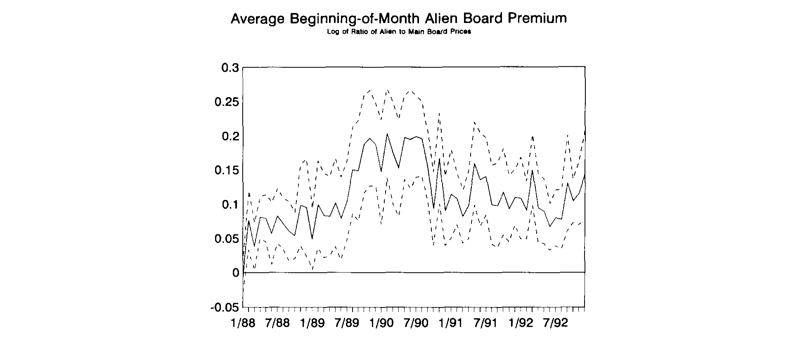
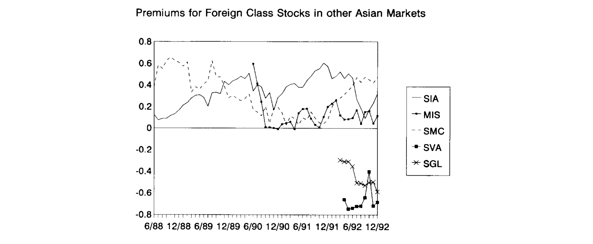
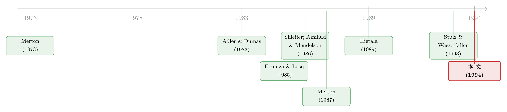

同一只股票，外国人偏要多付一成——泰国「外资板」里的市场分割
本文读的是 Bailey & Jagtiani (1994, Journal of Financial Economics)：在泰国证券交易所，同一家公司、同样的股利与投票权，被拆成「本地人交易的 Main Board」和「外国人交易的 Alien Board」两份挂牌。外国人付的价格系统性地更高——这个溢价从外资板初创时的接近零，一路漂到近年的 10% 以上。作者把这个溢价拆成四股力量：风险溢价、供给（向下倾斜的需求曲线）、流动性、信息。横截面上是供给/流动性/信息说了算，时间序列上则是风险暴露与风险溢价的差异。一句话：资本流动的壁垒，是真的把一个市场切成了两块。
1 一个尴尬的事实
先把场景摆出来。
在泰国证券交易所（Stock Exchange of Thailand, SET），有一批股票同时挂着两个价。一个挂在 主板（Main Board），那是泰国本地人买卖的地方；另一个挂在 外资板（Alien Board），专供外国人下单。两块板上交易的，是同一家公司、同一种普通股——同样的股利、同样的投票权、同样的清算与登记程序。除了「谁能买」这一条，没有任何区别。
可外国人付的价，却几乎总是更高。
这就尴尬了。金融学第一课告诉我们，同样的现金流应该卖同样的价格——这几乎是「无套利」三个字的全部内容。一份分红一模一样、投票权一模一样的股票，凭什么换一拨人来买就要贵上一截？而且这个「贵」还不是个零头：作者定义的 外资板溢价（Alien Board price premium），是同一时点外资板价格与主板价格之比取自然对数，整个样本横截面里，它从 Thai Plastics and Chemicals 的约 0%，一路铺到 Saha-Union 的约 30%。把所有公司按月平均起来，这个溢价在外资板 1987 年 9 月刚开张时还贴着零，到样本后期已经稳稳站上了 10% 以上。

Figure 1: The average monthly Alien Board price premium on the Stock Exchange of Thailand. The
如图 1 所示，这条平均溢价曲线连同它正负两个横截面标准误的带子，绝大多数时候都明明白白地待在零线之上。换句话说，这不是噪声，不是几个异常公司把均值带偏——这是一个系统性的、会随时间漂移的、显著为正的价差。
于是问题就来了：这个价差到底是从哪儿来的？
2 为什么外资板更贵：把溢价拆成四股力
要回答这个问题，得先想清楚「同一只股票卖两个价」在逻辑上意味着什么。
在最简单的折现现金流框架里，外资板价格更高，只能来自两件事之一：要么外国股东预期能拿到更高的现金流，要么他们用了更低的风险调整后要求回报（required return）。前一条基本可以排除——两块板的股利完全一样，泰国对本地与外国投资者在所得与资本利得上的税率在样本期内也没大幅波动。所以矛头指向了后者：本地人和外国人对同一只股票，要求的回报率不一样。
这就把我们引到了第一种、也是理论上最干净的解释：风险与要求回报的差异。
一个带时变风险溢价的多因子框架
作者借用 Merton (1973) 的跨期资本资产定价框架，写下一个带时变风险溢价的多因子模型。它的核心是下面这个条件期望：
这里 \(E(\cdot \mid \Omega_t)\) 是基于 \(t\) 时刻可得信息 \(\Omega_t\) 的条件期望。真正点睛的是那个上标 \(k\)：它标记的是投资者群体。模型允许本地人（\(k=\text{thai}\)）和外国人（\(k=\text{world}\)）对同一只股票，既有不同的风险载荷 \(\beta^k_{j,i}\)，也有不同的风险溢价 \(\lambda^k_{j,t}\)。
于是结论自然浮现：
$$\text{Alien premium}_{i} \;\propto\; E^{\text{world}}(\tilde r_{i,t+1}\mid\Omega_t) - E^{\text{thai}}(\tilde r_{i,t+1}\mid\Omega_t)$$
也就是说，外资板溢价的根，是两类投资者要求回报之差。横截面上的差异，来自各公司风险暴露 \(\beta^{\text{world}}_{i}\) 与 \(\beta^{\text{thai}}_{i}\) 的不同；时间序列上的差异，来自泰国与世界风险溢价 \(\lambda^{\text{thai}}_t\)、\(\lambda^{\text{world}}_t\) 随时间此消彼长。这正是「市场被有效分割」最朴素的表达：如果两块市场真的连通，套利会把 \(E^{\text{world}}\) 和 \(E^{\text{thai}}\) 拉平，溢价就该塌回零。它没塌，说明壁垒是真的。
作者具体用了两组风险因子：第一组是「世界」因子——世界股指收益 RWORLDX、汇率因子 RDOLLAR、利率因子 DTBILL；第二组是「泰国」因子——SET 指数收益 RSETX、泰铢汇率 RBAHT、泰国利率 DRTHAI。
但风险，并不是故事的全部
接着，一个自然的问题是：如果只靠风险，能不能把这个溢价讲圆？
不能。所以作者又请来了另外三位「嫌疑人」：
其二，向下倾斜的需求曲线（供给）。 这条线索来自 Shleifer (1986) 和 Harris & Gurel (1986)——他们在研究股票被纳入主要指数时，提出股票的需求曲线可能并非完全弹性。而 Stulz & Wasserfallen (1993) 的模型更贴切：想要复制一个市值加权泰国组合的外国投资者，会对外资类股票产生不完全弹性的需求。一家公司若在外资目标组合里权重很高、可外资持股上限又卡得很紧，就会被抢着买，外资板溢价自然大。
其三，流动性。 Amihud & Mendelson (1986) 早就指出，相对不流动的股票要求更高的回报、因而被定价更低，以补偿交易成本（关于流动性如何定价新兴市场，可参见《数不清的「零」：新兴市场用一串静止的价格，量出了流动性的价格》）。在泰国，外国人愿意为相对流动的外资板挂牌出更高的价，于是这些公司的外资板溢价更高。
其四，信息。 Merton (1987) 的「不完全信息均衡」里，每个投资者只交易自己熟悉的那一小撮资产；一只知情者基础狭窄的资产，价格会低于完全信息下的水平。French & Poterba (1991) 用同样的逻辑解释了「本土偏好」之谜。顺着这条线，外国投资者会涌向那些信息丰富、家喻户晓的大公司——所以大而知名的泰国公司，外资板溢价应当更高。
注意作者的措辞：这四种解释并不互斥。文章的整个实证设计，就是要看每一股力量各自能解释多少。
3 数据：60 个月，27 家公司，两块板
讲清楚了「问什么」，再看「拿什么问」。
数据来自 SET 的日度交易数据库。外资板虽然 1987 年 9 月就开张，但数据库里的外资板价格要到 1988 年才出现，所以样本是 1988 年 1 月到 1992 年 12 月，整整 60 个月。作者对数据做了一道细致的处理：对每家公司、每个月，去找一个主板与外资板都有正成交量、且尽量靠近（但不超过 3 个交易日）当月首个交易日的日子，配出一对同时点的月度价格；配不上就记为缺失。收益率用美元计、取对数、再减去一个月期美国国债收益率得到超额收益。最后剩下 27 家公司。
这 27 家的横截面差异本身就很说明问题：外资持股上限从 25%（银行与金融业被卡得最死）到 50% 不等；公司规模从约 US$100 百万到超过 US$2.5 十亿；两块板的相对成交量、外资板的绝对活跃度也千差万别。
值得一提的是泰国市场当时的体量——这不是个边角小市场。1992 年 1 月，全市场月成交约 US$6 十亿，其中外资板约 US$150 百万；总市值约 US$40 十亿，已超过奥地利、芬兰、新西兰、挪威这些发达市场。而本地人与外国人面对的投资机会集却天差地别：样本期内泰国人受到外汇交易、海外证券投资的严厉管制乃至禁止，外国人则不能借入本币、不能控股泰国公司，分红预提税也从 25% 才逐步降到 10%（且外国人不享受泰国人的股利税收抵免）。这些壁垒，正是「市场分割」假说能够成立的制度基础。
4 结果：横截面靠供给与信息，时间序列靠风险
现在来看证据，这也是全文最关键的一步。作者把溢价的横截面行为和时间序列行为分开来打。
横截面上，作者跑了一组回归，用四类变量去解释各公司外资板溢价的差异。这里有一个有意思的反转：按 Hietala (1989) 和 Stulz & Wasserfallen (1993) 的做法，先用每家公司「外资板减主板收益」对六个经济风险因子做时序回归，估出 \(\beta^{\text{world}}_i - \beta^{\text{thai}}_i\)，再把这个 beta 差放进横截面回归。结果是——beta 差只能解释外资板溢价横截面变异的约 10%；而且对世界股指风险的暴露差，系数虽然显著，符号却反了：更高的外资板 beta 本该意味着更高要求回报、更低的外资板价格，可数据给出的是正号。换句话说，纯风险故事在横截面上并不灵。
真正在横截面上说了算的，是供给、流动性和信息：那些外资可买份额相对稀缺、外资板交易相对活跃、规模大而信息丰富的公司，外资板溢价更高。这与「向下倾斜的需求曲线 + Amihud-Mendelson 流动性 + Merton 信息」的预测一致（关于「外资偏好其实只是偏好大公司/机构特征」这一争论，可参见《「外资偏好」是个伪命题——他们只是机构而已》）。

Figure 3: plots relative foreign and domestic prices for representative firms from
如图 3 所示，把几家代表性公司的外资/本地相对价格画出来，可以直观看到不同公司溢价水平与波动的巨大差异——这正是横截面回归要去解释的东西。
时间序列上，故事却换了主角。当作者转而研究溢价随时间的摆动时，证据变得与风险暴露和预期风险溢价的差异相一致。也就是说，那个在横截面上「不灵」的多因子风险框架，到了时间序列维度反而站住了脚：泰国与世界风险溢价随时间的此消彼长，驱动着平均溢价的上下漂移。这恰恰呼应了第 2 节那个分解——横截面变异来自 \(\beta\) 的不同，时序变异来自 \(\lambda_t\) 的不同。
这里藏着本文最漂亮的一个判断：同一个溢价，横截面和时间序列由不同的力量主导。 把两个维度混在一起跑回归，很容易得出「风险不重要」或「风险才重要」的片面结论；分开来看，才看清风险只解释了「随时间怎么变」，而「哪家公司更贵」要靠摩擦（供给/流动性/信息）来回答。
还有一个不得不处理的技术麻烦：世界因子与泰国因子高度相关——世界与泰国股指收益相关 42.1%，两国汇率变动相关 74.1%。作者的办法是把泰国变量对三个世界变量做回归，取残差作为「泰国特质风险因子」，再在全文后续分析中使用。这样既保留了泰国本地风险，又避免了多重共线性把系数搅成一团。
5 文献脉络
把这篇论文放回它所在的脉络里，线索其实很清楚。
最早的一支，是把「市场分割」写进资产定价的理论工作。Adler & Dumas (1983) 给出了允许偏离购买力平价的国际组合选择框架；Errunza & Losq (1985) 则正式刻画了「轻度分割（mild segmentation）」下的国际资产定价，并预测受限的本地类股票应当卖得比对应的外国类股票更便宜——这正是泰国故事的理论母题。Merton (1973) 的跨期 CAPM 提供了时变风险溢价的多因子骨架。

接着，是把「为什么同一只股票两个价」拆细的几条独立线索：Shleifer (1986)、Harris & Gurel (1986) 提出股票需求曲线可以向下倾斜；Amihud & Mendelson (1986) 把流动性写进要求回报；Merton (1987) 用不完全信息解释了为什么知名度会变成溢价。这三块「积木」原本各管各的，本文把它们和风险框架一起，搬到了泰国这张独特的「两块板」实验台上。
然后是同时代的实证近邻：Hietala (1989) 用芬兰受限/不受限股票的差异做了开创性检验，Stulz & Wasserfallen (1993) 给出了「外资类股票需求不完全弹性」的理论与瑞士证据。本文所处的位置，正是把这套「分割市场 + 多重摩擦」的检验，落到一个制度上把本地与外国交易硬性分开、因而格外干净的新兴市场样本上——这也是它直到今天仍被反复引用的原因。这条线后来一路延伸到跨境上市、外资持有人行为的当代研究（如《外资真是「蝗虫」吗？——一次跨 30 国的长期投资体检》，以及《把股票挂到纽约，是为了给小股东一份「不会被偷」的承诺》）。
6 评论与延伸（Q&A + 研究方向）
(a) 几个可能的疑问
Q：外资板溢价会不会只是个套利没做干净的「市场摩擦」，谈不上真正的市场分割？
恰恰相反，这里的「无法套利」本身就是分割的证据。settlement/registration 的滞后理论上只允许泰国人持有外资板股票、或外国人持有受限主板股票最多 30 天，且要损失股利和投票权——这道墙挡住了把两个价格拉平的套利。价差能稳定为正、还随时间漂移，正说明两块市场没有被打通。
Q：既然股利、投票权、清算程序都一样，会不会是税收差异造出了溢价？
作者明确排除了这条路。两块板股利完全相同，泰国与外国对所得、资本利得的税率在样本期内没有大幅波动，所以现金流端基本对齐。溢价只能来自分母——风险调整后要求回报的差异，而非分子。
Q：beta 差只解释了横截面变异的约 10%，是不是说风险根本不重要？
不能这么读。横截面上风险确实弱（而且世界股指 beta 的符号还反了），但时间序列上溢价的摆动与风险暴露、预期风险溢价的差异相一致。结论是「风险解释时间维度，摩擦解释横截面维度」，而不是「风险不重要」。
Q：为什么世界股指 beta 的系数符号是反的？这是不是模型设定出了问题？
这是本文一个诚实的「未解之处」。理论上更高的外资板 beta 应压低外资板价格，可数据给出正号。一个可能是横截面里供给/流动性/信息的力量太强，把 beta 这条弱信号挤成了带噪声的伪相关；也可能是用「生成回归量」（先估 beta 再做二阶段回归）带来的偏误。作者没有强行圆这个符号，留作开放问题。
Q：泰国因子和世界因子相关性那么高（汇率 74.1%），结果还可信吗？
作者用正交化处理：把泰国变量对三个世界变量回归取残差，作为「泰国特质因子」。这样世界因子吸收掉共同部分，残差捕捉泰国独有的风险，避免共线性把系数估得不稳。这是处理高相关因子的标准且透明的做法。
Q：27 家公司、60 个月，样本会不会太小、结论外推性存疑？
样本确实小，这是新兴市场早期数据的硬约束，时序检验的功效因此受限。但好处是制度极其干净——同一只股票被法律强制拆成两个挂牌，几乎是教科书式的分割实验。小样本牺牲的是统计精度，换来的是识别上的清晰。
(b) 几个可能的研究问题与提案
1. 把「外资板溢价」搬进公司债/信用市场。 【经济故事】很多新兴市场对外资持有本币公司债设限，或存在离岸/在岸两种价格。同一发行人、同一票息的债券若因投资者准入不同而出现价差，正是债市版的「外资板溢价」，且能进一步分解出信用、流动性与汇率管制各自的贡献。 【可行性】中。需要在岸/离岸配对的债券价格（如中国「点心债」与境内债、印度 Masala bond），识别靠发行人固定效应 + 准入政策变动的时序冲击；难点是配对债券在期限/契约上的可比性。
2. 用外资准入的「政策放松」做事件研究，给溢价做因果识别。 【经济故事】本文样本期内泰国正逐步降预提税、放开汇回管制。每一次放松都是一次「壁垒变薄」的冲击，溢价应当随之收敛。把这些放松日期当作准自然实验，能把「分割」从相关性推向因果。 【可行性】高。政策日期可考；用溢价对放松事件做 DiD 或事件研究，处理组是受限最紧（外资上限低）的公司。数据需求不高，识别相对干净。
3. 把「向下倾斜的需求曲线」用外资持仓微观数据直接量出来。 【经济故事】本文只能用「相对供给代理变量」间接推断需求弹性。若能拿到外资在每只股票上的持仓与流量，就能直接估计需求曲线斜率，检验 Stulz-Wasserfallen 的不完全弹性预测。 【可行性】中。需要个股层面的外资持仓/流量数据（部分新兴市场交易所披露）；识别可借鉴需求体系（demand system）估计，工具变量来自指数权重变动。
4. 流动性那一股力量，能不能拆得更细？ 【经济故事】本文用成交活跃度代理流动性。但流动性溢价里既有交易成本，也有「卖不掉」的风险。用价差、价格冲击（如 Amihud 比率，见《想买走一家公司千分之一的股票，得把价格推高百分之一》）分别度量，能看清外国人到底在为哪一种流动性付费。 【可行性】高。日内或日度成交数据即可构造多种流动性指标，放进横截面回归比较，技术成熟。
7 我的判断
贡献。 这篇论文最值钱的地方，不是「发现外国人付得更高」——那在 Hietala 的芬兰研究里已见端倪——而是它找到了一个制度上把本地与外国交易硬性切开的实验台，并且第一个把「风险、供给、流动性、信息」四股力量同时摆上来、再按横截面与时间序列两个维度分别归因。结论清爽：摩擦主导横截面，风险主导时间序列。这种「同一现象、不同维度、不同机制」的拆解，是它三十年后仍被引用的真正原因，也为后来研究封闭式国家基金、可转换欧洲债券、跨境上市溢价提供了统一的解释口径。
对识别的担忧。 两点。其一，世界股指 beta 那个反号的系数没有被真正解决——它可能来自生成回归量（generated regressor）的二阶段偏误，也可能是横截面里摩擦力量把弱风险信号淹没了，作者诚实地把它留作开放问题，但这确实削弱了「风险解释横截面」这一侧的说服力。其二，样本只有 27 家公司、60 个月，时序检验功效有限，泰国与世界因子又高度相关，正交化虽是标准操作，却也把「泰国风险」重新定义成了「对世界因子回归后的残差」，其经济含义不再那么直白。
后续想看到什么。 我最想看的是因果而非相关：把样本期内泰国一连串外资管制放松（预提税下调、汇回放开）当作准自然实验，看溢价是否在壁垒变薄时显著收敛、且在受限最紧的公司上收敛最多。如果能配上个股层面的外资持仓流量，直接估出需求曲线的斜率，那么「向下倾斜的需求」就不再是一个代理变量的间接推断，而是一个能被读出来的数字。这正是把一篇优秀的相关性研究，推向因果识别的下一步。
参考文献
Adler, M. and B. Dumas (1983). International portfolio choice and corporate finance: A synthesis. Journal of Finance 38, 925–984.
Amihud, Y. and H. Mendelson (1986). Asset pricing and the bid-ask spread. Journal of Financial Economics 17, 223–249.
Bailey, W. and J. Jagtiani (1994). Foreign ownership restrictions and stock prices in the Thai capital market. Journal of Financial Economics 36, 57–87.
Errunza, V. and E. Losq (1985). International asset pricing under mild segmentation: Theory and test. Journal of Finance 40, 105–124.
French, K. R. and J. M. Poterba (1991). Investor diversification and international equity markets. American Economic Review 81, 222–226.
Harris, L. and E. Gurel (1986). Price and volume effects associated with changes in the S&P 500 list: New evidence for the existence of price pressures. Journal of Finance 41, 815–829.
Hietala, P. (1989). Asset pricing in partially segmented markets: Evidence from the Finnish market. Journal of Finance 44, 697–718.
Merton, R. C. (1973). An intertemporal capital asset pricing model. Econometrica 41, 867–887.
Merton, R. C. (1987). A simple model of capital market equilibrium with incomplete information. Journal of Finance 42, 483–510.
Shleifer, A. (1986). Do demand curves for stocks slope down? Journal of Finance 41, 579–590.
Stulz, R. M. and W. Wasserfallen (1993). Foreign equity investment restrictions and shareholder wealth maximization: Theory and evidence. Working paper, Ohio State University.